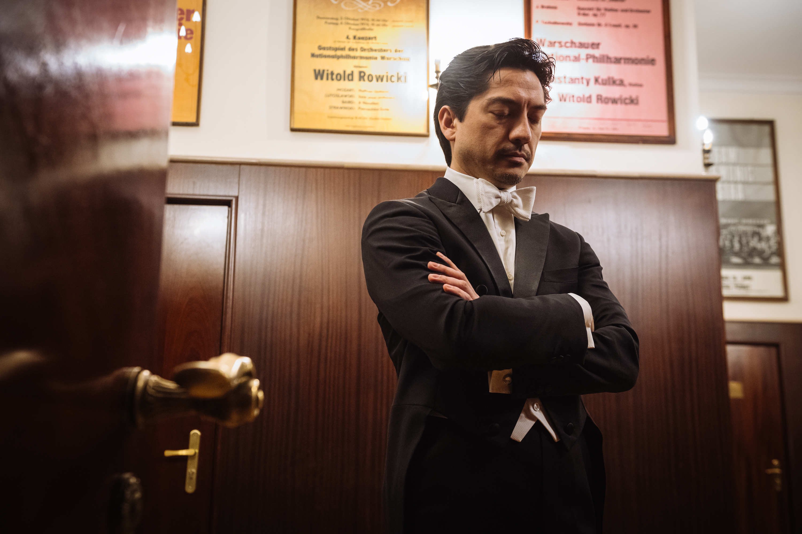
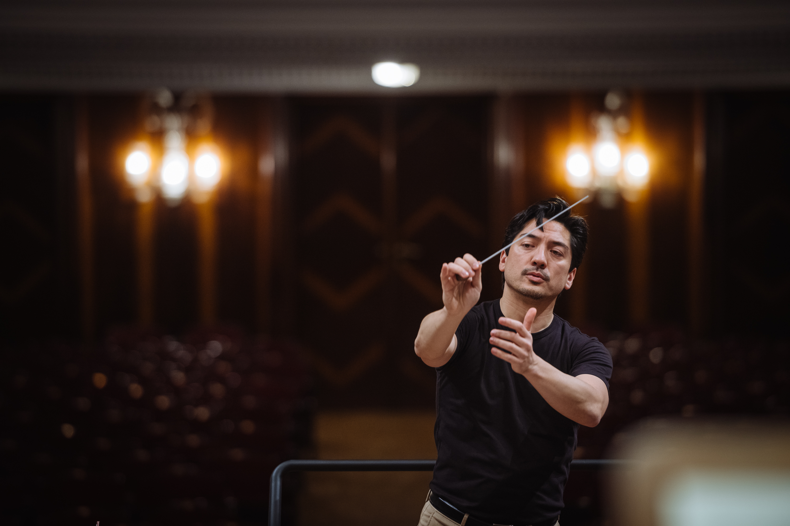
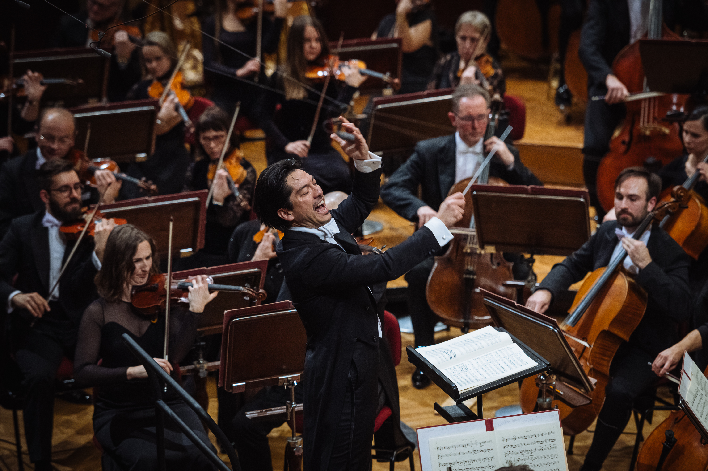
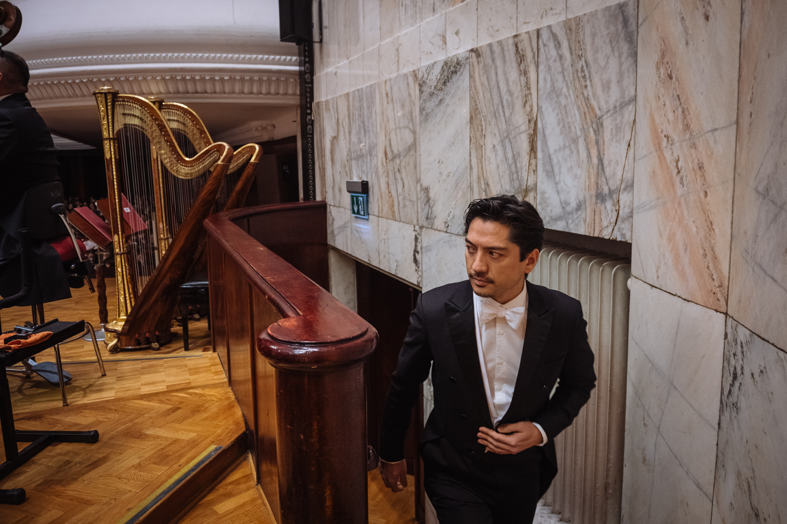

Eugene Tzigane was born in Tokyo in 1981 to a Japanese mother and an American father. Growing up between continents, he developed an early fascination with both the elegance of Japanese aesthetics and the dynamism of Western musical traditions. His multicultural roots continue to shape his artistic approach — one that fuses analytical rigour with expressive freedom.
Tzigane trained at some of the world's most respected institutions. After studying at the Juilliard School under the mentorship of James DePreist, he graduated with a Master of Music in orchestral conducting in 2007. He then moved to Sweden to continue studies with the legendary Finnish conductor Jorma Panula at the Royal College of Music in Stockholm — joining a lineage of some of the finest conductors of the 20th and 21st centuries.
His career quickly gained momentum. In 2007, Tzigane won the Lovro von Matačić Competition in Zagreb, followed by the Grand Prize at the Grzegorz Fitelberg International Conducting Competition in Katowice. In 2008, he won the Second Prize at the Sir Georg Solti Conducting Competition in Frankfurt. These honours established him as a rising talent on the international stage.

Tzigane's first major appointment came in 2010 when he was named Chief Conductor of the Nordwestdeutsche Philharmonie, becoming the youngest in Germany at the time. During his tenure, he led over 140 concerts across Germany, Austria, Spain, and North America, expanding the orchestra’s repertoire and profile. He was concurrently Principal Guest Conductor of the Filharmonia Pomorska in Poland from 2009 to 2013.
In 2023, he assumed his current role as Chief Conductor and Artistic Director of the Kuopio Symphony Orchestra, having been a regular and much-praised guest in the seasons leading up to his appointment. His programmes in Kuopio have earned acclaim for their "curatorial boldness" and "arresting emotional depth" (Savon Sanomat), bringing neglected repertoire to light alongside masterworks of the canon. Beginning Autumn 2025, he assumes the title of First Conductor and will undertake a Brahms cycle in a Historically Informed, Wagnerian style.

Tzigane is equally at home in the opera house. He made his operatic debut at the Bayerische Staatsoper in Munich with Così fan tutte, and has since conducted productions at Hamburg State Opera, Oper Frankfurt, and the Royal Swedish Opera, including Die Zauberflöte, Die Fledermaus, and Carmen. His operatic style is noted for its dramatic pacing and sensitive attention to vocal phrasing.
His symphonic repertoire spans from the Baroque to the present day. He has a particular affinity for late Romantic and early 20th-century repertoire, but also advocates for underrepresented composers and contemporary voices. Recent programming has included works by Samuel Coleridge-Taylor, Dora Pejačević, and contemporary Finnish and French composers.

Tzigane has conducted leading orchestras on four continents, including:
Europe: Deutsches Symphonie-Orchester Berlin, Bruckner Orchester Linz, Sinfonieorchester Basel, BBC Scottish Symphony Orchestra, Royal Scottish National Orchestra, Netherlands Philharmonic Orchestra, Copenhagen Philharmonic, Staatsphilharmonie Rheinland-Pfalz, Sinfonia Lahti, Tampere Philharmonic, Tapiola Sinfonietta, Norrköping Symphony Orchestra, RTÉ National Symphony Orchestra (Ireland), Prague Philharmonia, Orquesta Sinfónica de Galicia, and Tonkünstler Orchestra.
North America:Indianapolis Symphony Orchestra, Rochester Philharmonic, Oregon Symphony, Columbus Symphony, Fort Worth Symphony, North Carolina Symphony, and New Jersey Symphony Orchestra.
Asia & Australia: Tokyo Metropolitan Symphony Orchestra, Yomiuri Nippon Symphony Orchestra, Adelaide Symphony Orchestra, West Australian Symphony Orchestra.
Chief Conductor & Artistic Director
Kuopio Symphony Orchestra
Chefdirigent
Nordwestdeutsche Philharmonie 2010-2014
Principal Guest
Filharmonia Pomorska, Bydgoszcz 2009-2013
Grand Prize
8th Grzegorz Fitelberg Competition, Katowice
2nd Prize
4th Georg Solti Competition, Frankfurt
2nd Prize
4th Lovro von Matacic Competition, Zagreb
The Juilliard School
M.M. in Orchestral Conducting
Royal College of Music, Stockholm
Post Graduate Diploma
Bruno Walter Memorial Award
The Juilliard School
Franz Berwald Memorial Prize
Royal College of Music, Stockholm